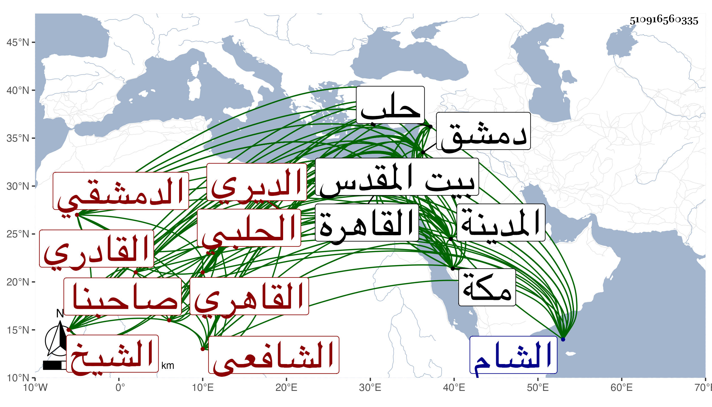

0902Sakhawi.DawLamic.ITO20230111-ara1.EIS1600.510916560335
Biography ID: 510916560335
إبراهيم بن علي بن أحمد بن بريد تصغير برد صاحبنا الشيخ برهان الدين أبو إسحاق الديري الحلبي ثم القاهري ثم الدمشقي الشافعي القادري وبه يعرف فيقال له الشيخ إبراهيم القادري . ولد في سنة ست عشرة وثمانمائة تقريبا بدير العشاري من رحبة ابن مالك وسافر وهو طفل مع أبويه إلى حلب فاستوطنها ولم يلبث أن ماتا في بعض الطواعين فنشأ في كفالة عمه محمد وقرأ القرآن عند جماعة منهم إبراهيم الماقريزي وصحب هناك الزين قاسم الحبشي وتواخيا وترافقا إلى أماكن من جملتها الشام فأقاما بزاوية أبي عمر وكان يقرأ على حسن الحبشي وحضر مجلس أبي شعر وغيره ثم دخلا القاهرة بعد سنة ثلاث وثلاثين فسمعا على شيخنا ثم حجا ورجعا إلى القاهرة ثم إلى حلب واجتمعا في توجههما إليها بالشمس محمد بن أبي بكر بن خضر الديري فلبسا منه الخرقة وزارا بيت المقدس ثم حجا ثانيا وجاورا بالمدينة شهرين فأكثر ثم عادا إلى القاهرة وصحبا إمام الكاملية ثم تزوجا وعادا أيضا إلى مكة صحبة السيد علي بن حسن بن عجلان فجاورا ثم رجعا وقطنا القاهرة وقتا وسمعا بها الكثير على شيخنا والعز بن الفرات وآخرين وكذا سمعا بدمشق وبيت المقدس ومكة وغيرها على طائفة ممن أخذنا عنهم . وتلا القرآن على الشهاب بن أسد وحضر دروس الفقه عند العلم البلقيني وغيره وقرأ في الأصول وغيره على إمام الكاملية وأتقن أبواب العبادات ولبس الخرقة أيضا من الشيخ عبد القادر بن محمد القادري وأبي الفتح الفوى في آخرين واعتنى بترجمة الشيخ عبد القادر الجيلاني فأجاد تصنيفها وقرضها له غير واحد وعمل أيضا النصيحة لدفع الفضيحة في الإنكار على الطائفة الصمادية في الطبل والرقص ضنعه في سنة ستين ورفع الالتباس ودفع الوسواس ومفاتيح المطالب ورقية الطالب وغير ذلك ولهج كثيرا بجمع أخبار الصوفية فكتب من ذلك جملة في مجلدين وهو متقن في كل ما يعمله كثير التحري لما ينقله غاية في الورع وصدق اللهجة والحرص على اتباع السنة والتنفير عن البدع مع الهمة العالية ومزيد الأفضال على أحبابه والتقنع باليسير والانجماع عن بني الدنيا وعدم مخالطتهم والإقبال على شأنه من المطالعة والعبادة ووظائف الخير قل إن رأيت في مجموعه مثله والثناء عليه مستفيض حتى أن سلطان وقتنا وأتابك مملكته لا يعدله عندهما أحد وكم عرض عليه من شيء فأباه . وقد حدث ببعض تصانيفه أخذها عنه بعض الفضلاء وممن أخذ عنه صاحبنا النجم بن فهد وبيننا من الود مالا أنهض بوصفه وقد استفاد مني كثيرا من التراجم والأحاديث وكتب بخطه من تصانيفي جملة سوى ما عنده بغير خطه وافتتح بعض ما كتبه عني بقوله أنبأ شيخنا الشيخ الإمام الحافظ الأستاذ العلامة فلان . وكان بالقاهرة ثم سافر منها في أوائل ربيع الثاني إلى دمشق محل استيطانه فأقام بها حتى مات قريبا من نصف ليلة السبت ثامن عشر رجب سنة ثمانين بعد توعك نحو يومين فإنه صلى الصبح يوم الخميس بمسجد تجاه مدرسة أبي عمر ثم رجع إلى بيته فأقام في مكان منه عادته الجلوس فيه حتى يصلي الضحى فلما دخل وقتها قام ليصليها قائما فما استطاع فجلس ثم غلب عن نفسه كما قام واستمر باقي يومه والذي يليه لا يسمع منه سوى قول الحمد لله بهمة جريا على عادته حين قراءته الفاتحة في الصلاة لكون الصلاة كانت آخر عهده حتى مات وصلى عليه من الغد ثم دفن بجوار مواخيه قاسم وبلغ أمنيته فإنه كان حين إقامته بالقاهرة يرام منه الإقامة بها فيقول لا أموت ببلد غير الذي مات فيه أخي لأنني أعلم منه أنني لو مت قبله لم يفارق قبري في أشباه هذا من الكلام وكان قد تزوج بزوجته بعده وكأنه بوصية منه رحمهما الله وإيانا ونفعنا به .
